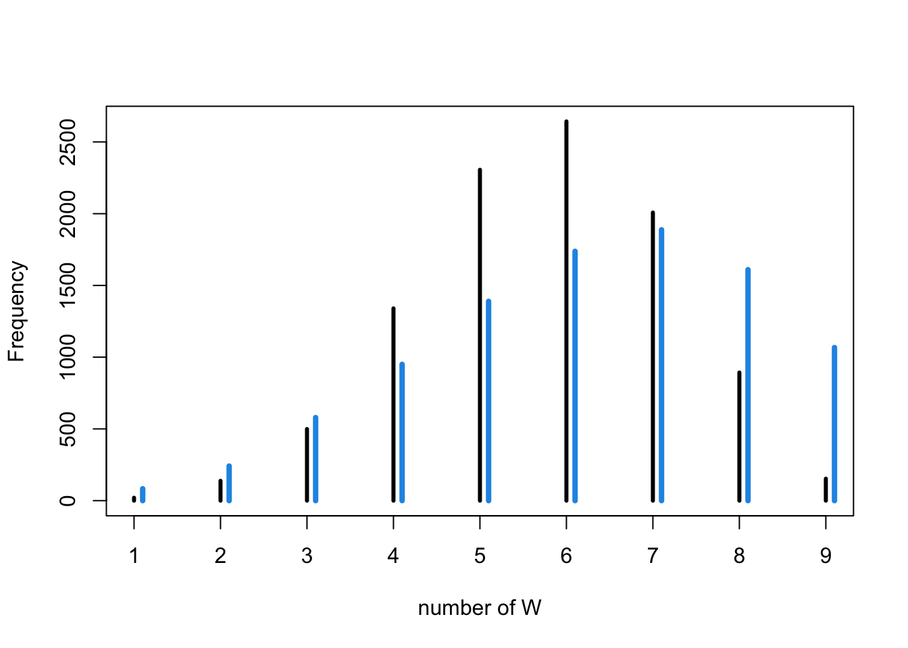
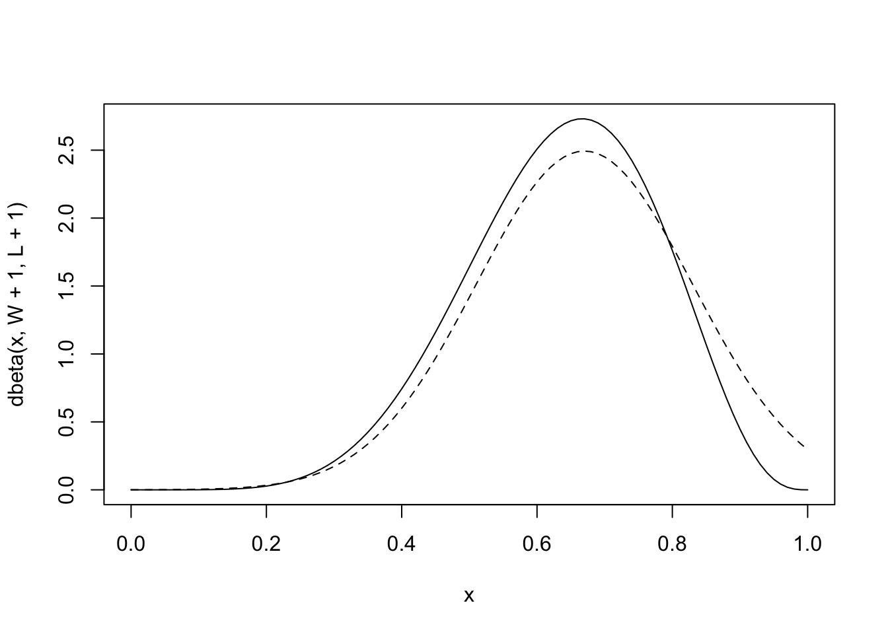
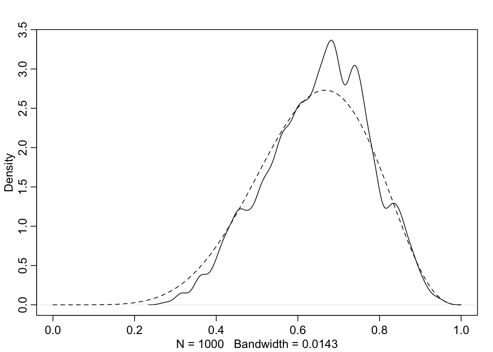
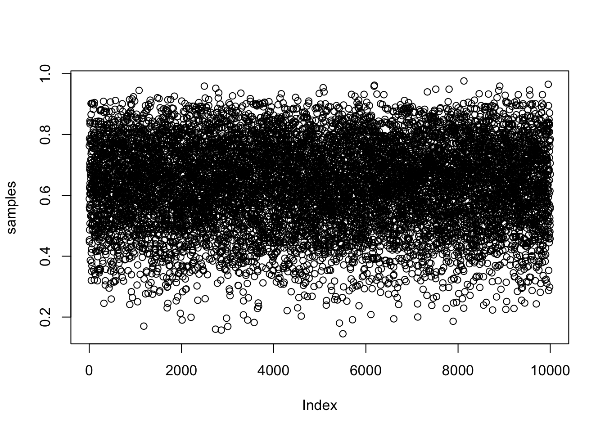
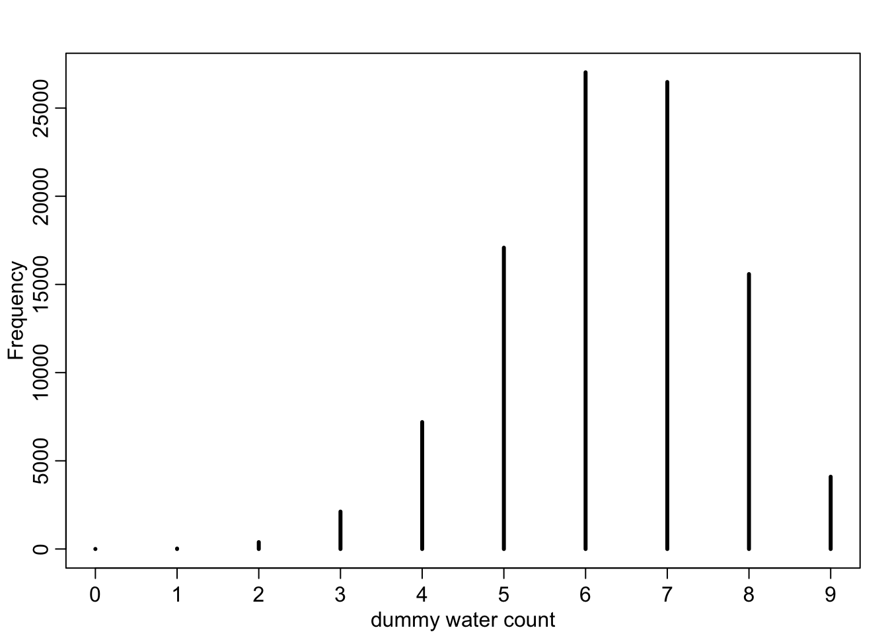

library(rethinking)Video lecture 2 (Garden of Forking Data)
Book: Statistical Rethinking, 2nd Edition
Video lectures: https://github.com/rmcelreath/stat_rethinking_2025
Video
Chapter 2
sample <- c("W","L","W","W","W","L","W","L","W")
W <- sum(sample=="W") # number of W observed
L <- sum(sample=="L") # number of L observed
p <- c(0,0.25,0.5,0.75,1) # proportions W
ways <- sapply( p , function(q) (q*4)^W * ((1-q)*4)^L )
prob <- ways/sum(ways)
cbind( p , ways , prob ) p ways prob
[1,] 0.00 0 0.00000000
[2,] 0.25 27 0.02129338
[3,] 0.50 512 0.40378549
[4,] 0.75 729 0.57492114
[5,] 1.00 0 0.00000000# function to toss a globe covered p by water N times
sim_globe <- function( p=0.7 , N=9 ) {
sample(c("W","L"),size=N,prob=c(p,1-p),replace=TRUE)
}
sim_globe()[1] "W" "W" "L" "L" "W" "W" "W" "L" "W"replicate(sim_globe(p=0.5,N=9),n=10) [,1] [,2] [,3] [,4] [,5] [,6] [,7] [,8] [,9] [,10]
[1,] "L" "L" "L" "L" "L" "L" "L" "L" "W" "W"
[2,] "L" "W" "L" "W" "L" "W" "L" "W" "L" "W"
[3,] "L" "W" "W" "L" "L" "W" "W" "W" "W" "W"
[4,] "W" "W" "W" "L" "W" "L" "L" "L" "W" "L"
[5,] "W" "L" "L" "W" "L" "W" "W" "W" "W" "L"
[6,] "L" "L" "W" "L" "L" "W" "L" "L" "W" "L"
[7,] "L" "L" "L" "W" "W" "L" "W" "L" "L" "W"
[8,] "L" "L" "W" "L" "W" "W" "L" "W" "W" "W"
[9,] "L" "L" "W" "L" "L" "W" "L" "W" "W" "L" sim_globe( p=1 , N=11 ) [1] "W" "W" "W" "W" "W" "W" "W" "W" "W" "W" "W"sum( sim_globe( p=0.5 , N=1e4 ) == "W" ) / 1e4[1] 0.5008# function to compute posterior distribution
compute_posterior <- function( the_sample , poss=c(0,0.25,0.5,0.75,1) ) {
W <- sum(the_sample=="W") # number of W observed
L <- sum(the_sample=="L") # number of L observed
ways <- sapply( poss , function(q) (q*4)^W * ((1-q)*4)^L )
post <- ways/sum(ways)
bars <- sapply( post, function(q) make_bar(q) )
data.frame( poss , ways , post=round(post,3) , bars )
}
compute_posterior(sim_globe()) poss ways post bars
1 0.00 0 0.000
2 0.25 9 0.003
3 0.50 512 0.189 ####
4 0.75 2187 0.808 ################
5 1.00 0 0.000 Chapter 3
post_samples <- rbeta( 1e3 , 6+1 , 3+1 )
head(post_samples)[1] 0.5213225 0.6944935 0.5512558 0.8223423 0.8047079 0.5818702dens( post_samples , lwd=4 , col=2 , xlab="proportion water" , adj=0.1 )
curve( dbeta(x,6+1,3+1) , add=TRUE , lty=2 , lwd=3 )
# now simulate posterior predictive distribution
post_samples <- rbeta(1e4,6+1,3+1)
pred_post <- sapply( post_samples , function(p) sum(sim_globe(p,10)=="W"))
tab_post <- table(pred_post)
mean_p <- mean(post_samples)
water_mean_predictions <- rbinom( 1e4 , size=9 , prob=mean_p )
simplehist( water_mean_predictions , xlab="number of W" )
for ( i in 0.1:10.1 ) lines(c(i,i),c(0,tab_post[i+1]),lwd=4,col=4)
Book
Chapter 2
## R code 2.1
ways <- c( 0 , 3 , 8 , 9 , 0 )
ways/sum(ways)[1] 0.00 0.15 0.40 0.45 0.00## R code 2.2
dbinom( 6 , size=9 , prob=0.5 )[1] 0.1640625## R code 2.3
# define grid
p_grid <- seq( from=0 , to=1 , length.out=20 )
# define prior
prior <- rep( 1 , 20 )
# compute likelihood at each value in grid
likelihood <- dbinom( 6 , size=9 , prob=p_grid )
# compute product of likelihood and prior
unstd.posterior <- likelihood * prior
# standardize the posterior, so it sums to 1
posterior <- unstd.posterior / sum(unstd.posterior)
## R code 2.4
plot( p_grid , posterior , type="b" ,
xlab="probability of water" , ylab="posterior probability" )
mtext( "20 points" )
## R code 2.5
prior <- ifelse( p_grid < 0.5 , 0 , 1 )
prior <- exp( -5*abs( p_grid - 0.5 ) )
## R code 2.6
library(rethinking)
globe.qa <- quap(
alist(
W ~ dbinom( W+L ,p) , # binomial likelihood
p ~ dunif(0,1) # uniform prior
) ,
data=list(W=6,L=3) )
# display summary of quadratic approximation
precis( globe.qa ) mean sd 5.5% 94.5%
p 0.6666667 0.1571338 0.4155366 0.9177968## R code 2.7
# analytical calculation
W <- 6
L <- 3
curve( dbeta( x , W+1 , L+1 ) , from=0 , to=1 )
# quadratic approximation
curve( dnorm( x , 0.67 , 0.16 ) , lty=2 , add=TRUE )
## R code 2.8
n_samples <- 1000
p <- rep( NA , n_samples )
p[1] <- 0.5
W <- 6
L <- 3
for ( i in 2:n_samples ) {
p_new <- rnorm( 1 , p[i-1] , 0.1 )
if ( p_new < 0 ) p_new <- abs( p_new )
if ( p_new > 1 ) p_new <- 2 - p_new
q0 <- dbinom( W , W+L , p[i-1] )
q1 <- dbinom( W , W+L , p_new )
p[i] <- ifelse( runif(1) < q1/q0 , p_new , p[i-1] )
}
## R code 2.9
dens( p , xlim=c(0,1) )
curve( dbeta( x , W+1 , L+1 ) , lty=2 , add=TRUE )
Chapter 3
## R code 3.1
Pr_Positive_Vampire <- 0.95
Pr_Positive_Mortal <- 0.01
Pr_Vampire <- 0.001
Pr_Positive <- Pr_Positive_Vampire * Pr_Vampire +
Pr_Positive_Mortal * ( 1 - Pr_Vampire )
( Pr_Vampire_Positive <- Pr_Positive_Vampire*Pr_Vampire / Pr_Positive )[1] 0.08683729## R code 3.2
p_grid <- seq( from=0 , to=1 , length.out=1000 )
prob_p <- rep( 1 , 1000 )
prob_data <- dbinom( 6 , size=9 , prob=p_grid )
posterior <- prob_data * prob_p
posterior <- posterior / sum(posterior)
## R code 3.3
samples <- sample( p_grid , prob=posterior , size=1e4 , replace=TRUE )
## R code 3.4
plot( samples )
## R code 3.5
library(rethinking)
dens( samples )
## R code 3.6
# add up posterior probability where p < 0.5
sum( posterior[ p_grid < 0.5 ] )[1] 0.1718746## R code 3.7
sum( samples < 0.5 ) / 1e4[1] 0.1755## R code 3.8
sum( samples > 0.5 & samples < 0.75 ) / 1e4[1] 0.5977## R code 3.9
quantile( samples , 0.8 ) 80%
0.7607608 ## R code 3.10
quantile( samples , c( 0.1 , 0.9 ) ) 10% 90%
0.4493493 0.8118118 ## R code 3.11
p_grid <- seq( from=0 , to=1 , length.out=1000 )
prior <- rep(1,1000)
likelihood <- dbinom( 3 , size=3 , prob=p_grid )
posterior <- likelihood * prior
posterior <- posterior / sum(posterior)
samples <- sample( p_grid , size=1e4 , replace=TRUE , prob=posterior )
## R code 3.12
PI( samples , prob=0.5 ) 25% 75%
0.7067067 0.9279279 ## R code 3.13
HPDI( samples , prob=0.5 ) |0.5 0.5|
0.8378378 1.0000000 ## R code 3.14
p_grid[ which.max(posterior) ][1] 1## R code 3.15
chainmode( samples , adj=0.01 )[1] 0.9970914## R code 3.16
mean( samples )[1] 0.7980337median( samples )[1] 0.8378378## R code 3.17
sum( posterior*abs( 0.5 - p_grid ) )[1] 0.3128752## R code 3.18
loss <- sapply( p_grid , function(d) sum( posterior*abs( d - p_grid ) ) )
## R code 3.19
p_grid[ which.min(loss) ][1] 0.8408408## R code 3.20
dbinom( 0:2 , size=2 , prob=0.7 )[1] 0.09 0.42 0.49## R code 3.21
rbinom( 1 , size=2 , prob=0.7 )[1] 2## R code 3.22
rbinom( 10 , size=2 , prob=0.7 ) [1] 2 1 2 2 1 1 2 1 1 2## R code 3.23
dummy_w <- rbinom( 1e5 , size=2 , prob=0.7 )
table(dummy_w)/1e5dummy_w
0 1 2
0.08983 0.41737 0.49280 ## R code 3.24
dummy_w <- rbinom( 1e5 , size=9 , prob=0.7 )
simplehist( dummy_w , xlab="dummy water count" )
## R code 3.25
w <- rbinom( 1e4 , size=9 , prob=0.6 )
## R code 3.26
w <- rbinom( 1e4 , size=9 , prob=samples )
## R code 3.27
p_grid <- seq( from=0 , to=1 , length.out=1000 )
prior <- rep( 1 , 1000 )
likelihood <- dbinom( 6 , size=9 , prob=p_grid )
posterior <- likelihood * prior
posterior <- posterior / sum(posterior)
set.seed(100)
samples <- sample( p_grid , prob=posterior , size=1e4 , replace=TRUE )